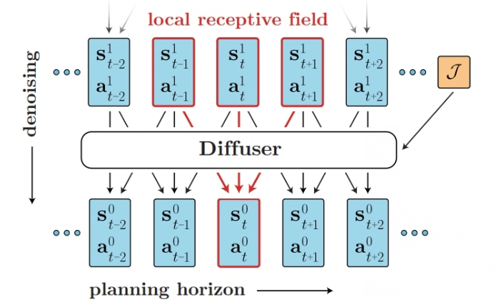
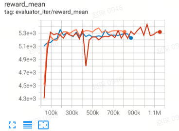
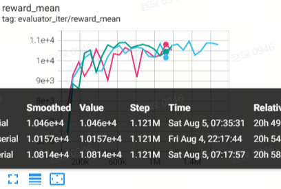
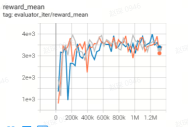
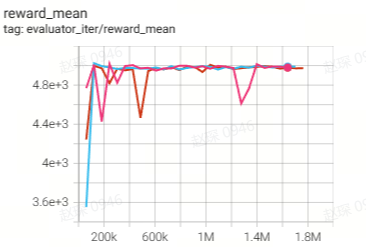
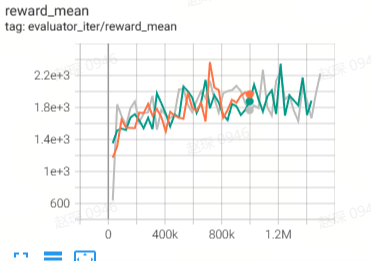
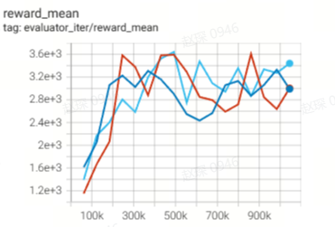

Diffuser (Plan Diffuser)¶
Overview¶
In the field of reinforcement learning, if we have a dataset \(T\) that contains a variety of trajectories, the goal of reinforcement learning is to mine and construct a high-performance agent from \(T\), hoping that it can be directly deployed to the environment and achieve good returns. From the perspective of model-free Offline RL, the core of the work focuses on how to more accurately estimate the \(Q\) value of each possible state-action pair, especially those that may query out-of-distribution state-action pairs. From the perspective of model-based Offline RL, the goal often becomes how to better fit the dynamic model of the real environment with this batch of data, and then implement the Online RL algorithm on this converged environmental model. After these two types of algorithms are finished, we usually get an explicit or implicit policy that can return an action that interacts with the environment given any environmental state.
The above methods often do not take advantage of the continuity of trajectories in \(T\), but instead divide each trajectory into several state transition segments and treat each such segment as an independent sample point for subsequent training. However, we can look at this dataset \(T\) from a completely new perspective, treating the entire trajectory as a sample point, thereby changing our goal to modeling the distribution of the entire trajectory. In the end, we can sample trajectories from the distribution with trajectory optimality as a conditional variable.
In recent years, diffusion models have shined in the generation field. Compared with other generative models, such as VAE and GAN, diffusion models have stronger capabilities to model complex distributions. Therefore, researchers have thought about trying to use diffusion models to model the trajectory distribution in \(T\). Diffusion, as proposed in the study Planning with Diffusion for Flexible Behavior Synthesis, represents a research approach that generates trajectories using a diffusion model.
Quick Facts¶
Diffusion views offline decisions as a sequence model problem.
Diffusion use diffusion model generating trajectory
Key Equations or Key Graphs¶
In diffusion, trajectories are concatenated as follows in the array:
Regarding the time dependency between each transition in the trajectory, Diffusion does not emphasize autoregression or Markovian properties, but makes a more relaxed assumption about temporal locality. Diffusion samples trajectories in the plan by iteratively denoising state-action pairs with variable quantities. In a single denoising step, a smaller receptive field constrains the model to infer the denoising result based on adjacent frames in the trajectory.
The original paper uses a model composed of repeated (temporal) convolutional residual blocks to meet these standards. The final structure mainly draws on U-Nets commonly used in image diffusion models, but replaces two-dimensional spatial convolution with one-dimensional temporal convolution. The loss function of this model is:
The algorithm transforms the RL problem into a conditional sampling problem. It utilizes a guiding function to evaluate the value of each sample trajectory at every timestep t. Ultimately, the algorithm selects the best trajectory as its output. The best trajectory is as follows:
Implementations¶
The default config is defined as follows:
- class ding.policy.plan_diffuser.PDPolicy(cfg: EasyDict, model: Module | None = None, enable_field: List[str] | None = None)[source]
- Overview:
Implicit Plan Diffuser https://arxiv.org/pdf/2205.09991.pdf
The network interface diffusion used is defined as follows:
- class ding.model.template.diffusion.GaussianDiffusion(model: str, model_cfg: dict, horizon: int, obs_dim: int | SequenceType, action_dim: int | SequenceType, n_timesteps: int = 1000, predict_epsilon: bool = True, loss_discount: float = 1.0, clip_denoised: bool = False, action_weight: float = 1.0, loss_weights: dict | None = None)[source]
- Overview:
Gaussian diffusion model
- Arguments:
model (
str): type of modelmodel_cfg (:obj:’dict’) config of model
horizon (
int): horizon of trajectoryobs_dim (
int): Dim of the ovservationaction_dim (
int): Dim of the ationn_timesteps (
int): Number of timestepspredict_epsilon (:obj:’bool’): Whether predict epsilon
loss_discount (:obj:’float’): discount of loss
clip_denoised (:obj:’bool’): Whether use clip_denoised
action_weight (:obj:’float’): weight of action
loss_weights (:obj:’dict’): weight of loss
- forward(cond, *args, **kwargs)[source]
Define the computation performed at every call.
Should be overridden by all subclasses.
Note
Although the recipe for forward pass needs to be defined within this function, one should call the
Moduleinstance afterwards instead of this since the former takes care of running the registered hooks while the latter silently ignores them.
Benchmark¶
environment |
reward_mean |
evaluation results |
config link |
comparison |
|---|---|---|---|---|
Halfcheetah
(Halfcheetah-medium-v2)
|
44.9 |
 | 42.8 |
|
Halfcheetah
(Halfcheetah-medium-expert-v2)
|
86.6 |
 | 88.9 |
|
Walker2d
(Walker2d-medium-v2)
|
71 |
 | 79.6 |
|
Walker2d
(Walker2d-medium-expert-v2)
|
108.5 |
 | 106.9 |
|
Hopper
(Hopper-medium-v2)
|
58.1 |
 | 74.3 |
|
Hopper
(Hopper-medium-expert-v2)
|
97.2 |
 | 103.3 |
References¶
Michael Janner, Yilun Du, Joshua B.Tenenbaum, Sergey Levine Planning with Diffusion for Flexible Behavior Synthesis https://arxiv.org/pdf/2205.09991